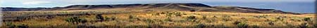
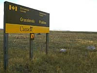
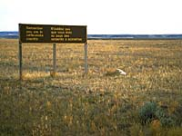
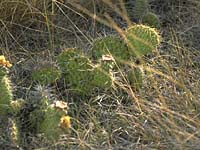
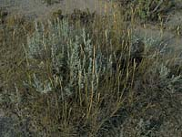
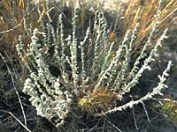
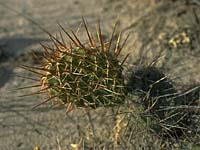

|
|
"Environmentally Sensitive Area". Please be careful where you walk and try not to disturb the natural environment. For additional information please contact Tourism Saskatchewan. | ||
Grasslands National Park | |||
| GPS: | 49d 12.32m N | 107d 33.79m W | 2755 feet |
| Location: | south-west Saskatchewan between Val Marie and Killdeer, south of Highway #18; park office is located in Val Marie | ||
 Open year-round, Grasslands National Park is the first representative portion of original mixed-grass prairie set aside in North America. Common prairie plants, and animals, rare and endangered prairie animals, cultural landscapes and the area's geological history is protected. | |||
 The park area includes grassland flora/fauna, Prairie Dog Town, Seventy Mile Butte, Killdeer Badlands, and Frenchman River Valley. | |||

In-park services include a self-guided ecotour, 1.5 kilometre hiking trail and interpretive programs (fee for this) in this over 45,000 hectares natural environment park. | |||

Wilderness camping is permitted 1km from roads and old buildings and no open fires are allowed. You make take part in hiking, horseback riding, birdwatching and photography. | |||
 Landowner's permission is required to access some sites. | |||
 Grasslands National Park is located in the far south of Saskatchewan in the "Great Trails Getaway" tourism region. | |||
 It is a relatively new national park in the early stages of development. Over 90,000 hectares of land will be included within the park boundaries. | |||
 The land has stubbornly resisted all 'civilization' attempts, so the landscape you see today - the grasslands, badlands and river valleys - looks much the same it did generations ago. | |||
| GPS: 49d 12.32m N, 107d 33.79m W, 27550 feet 30 July 96, 5:15 pm, Fuji Velvia 50, F11 1/125s | |||
| GPS: 49d 10.13m N, 107d 33.14m W, 2525 feet 30 July 96, 5:45 pm, Fuji Velvia 50, F11 1/125s | |||